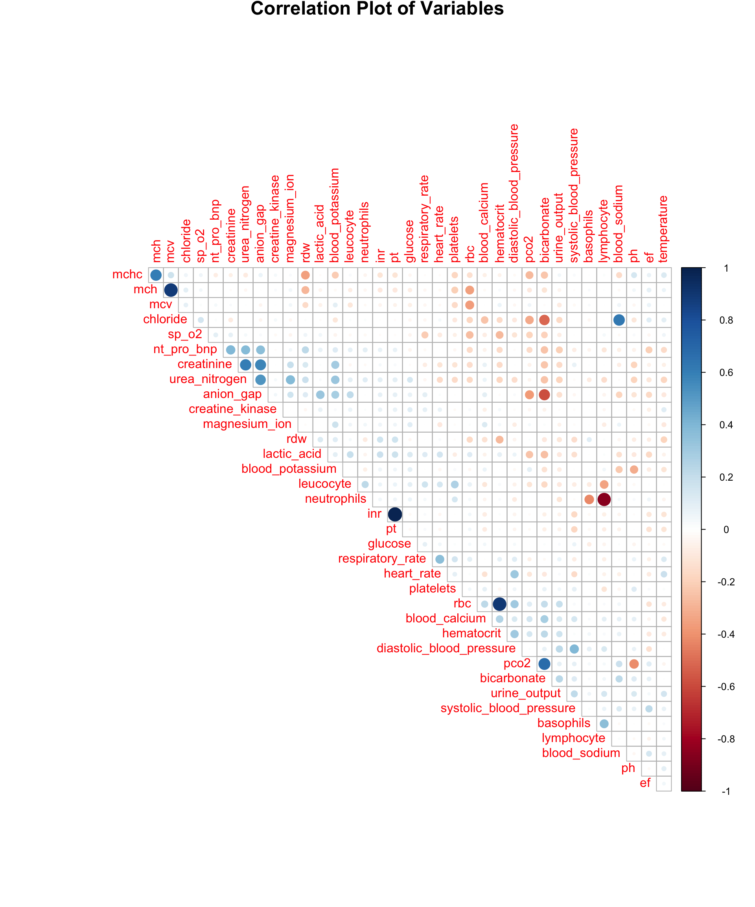
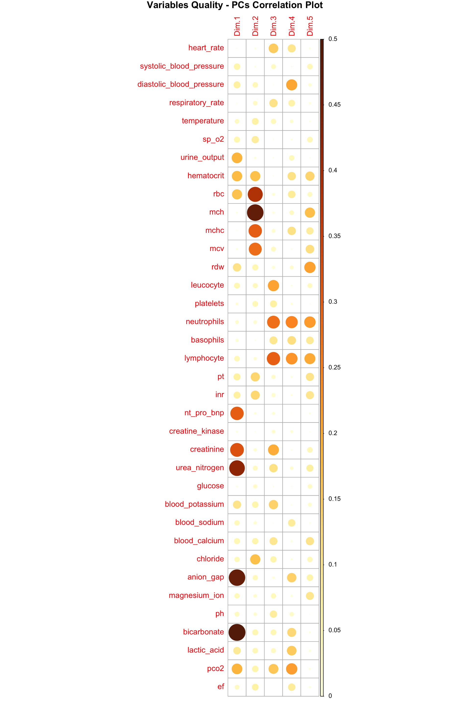
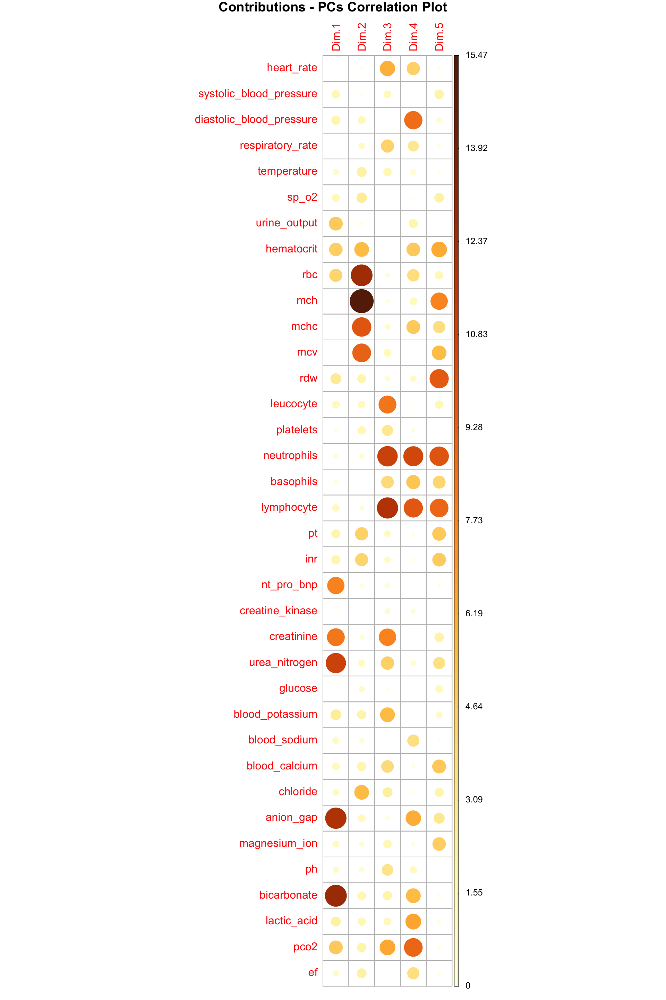

Preliminary Study
library(tidyverse)
library(corrplot)
library(FactoMineR)
library(factoextra)
library(randomForest)
library(party)
library(plotly)
set.seed(1)1. Correlation between Vital Signs
#show correlation
corrplot(cor(sign_tidy |> select(-outcome)), type = "upper", order = "AOE", diag = FALSE, title = "Correlation Plot of Variables", cex.main = 1.5, mar = c(0, 0, 1, 0))
The correlation plot illustrates the relationships between vital signs pairwise. Darker colors indicate stronger correlations, where blue signifies positive correlations and red signifies negative ones.
Strong positive correlations were observed between variables such as
rbc and hematocrit, mcv and
mch, inr and pt,
pco2 and bicarbonate. Conversely, a strong
negative correlation was found between neutrophils and
lymphocyte. Strong positive correlations often suggest the
potential for dimension reduction by merging these variables during
selection.
2. CART and rf: Dimension Reduction and Core Variables Analysis
2.1 Analysis of Patient comorbidities Variables
#decision tree for comorbidities
tree_com = ctree(outcome ~ ., data = com_tidy)
plot(tree_com, main = "Decision Tree for Comorbidities")
The decision tree employed variables renal_failure and
atrialfibrillation to predict the outcome, showing strong
evidence (p<0.05) for selecting these two variables.
However, the probability distribution at the nodes suggests that this decision-making approach might not be sufficiently reliable. This could be due to the similar effects of each variable, making it challenging to determine the next variable for refining the decision. Alternatively, it might indicate insufficient evidence to support the selection of other variables (p-values not meeting the criteria).
Furthermore, the binary nature of these patient comorbidities variables posed certain challenges in constructing the classification tree, making characteristics of the variables hard to analyze.
#random forest for comorbidities
rf_com = randomForest(outcome ~ ., data = com_tidy)
importance(rf_com) |>
as.data.frame() |>
mutate("Mean Decrease in Gini" = MeanDecreaseGini) |>
arrange(-MeanDecreaseGini) |>
select(-MeanDecreaseGini) |>
head(8) |>
knitr::kable(digits = 3)| Mean Decrease in Gini | |
|---|---|
| hyperlipemia | 5.552 |
| atrialfibrillation | 5.391 |
| renal_failure | 4.855 |
| deficiencyanemias | 4.700 |
| diabetes | 3.871 |
| chd_with_no_mi | 3.851 |
| hypertensive | 3.707 |
| depression | 3.645 |
varImpPlot(rf_com, main = "Random Forests for Comorbidities")
The random forest yielded a list of variables ranked by their
importance based on Mean Decrease in Gini, a parameter
calculated by assessing the influence of variables on the nodes of the
classification tree.
In descending order of importance, the top 5 variables are:
hyperlipemia, atrialfibrillation,
renal_failure, deficiencyanemias,
diabetes.
2.2 Analysis of Patient Vital Signs Variables
tree_sign = ctree(outcome ~ ., data = sign_tidy)
plot(tree_sign, main = "Decision Tree for Vital Signs")
The analysis of continuous variables related to vital signs resulted in the successful establishment of classification criteria by the decision tree, incorporating a total of 7 variables. It formed a 4-level classification structure with reasonably distributed probabilities across nodes.
The primary level classification variable is anion_gap.
The secondary level classification variables are
blood_calcium, bicarbonate. The tertiary level
classification variables are lactic_acid,
leucocyte, respiratory_rate. The forth level
classification variable is pt.
#random forest for vital signs
rf_sign = randomForest(outcome ~ ., data = sign_tidy)
importance(rf_sign) |>
as.data.frame() |>
mutate("Mean Decrease in Gini" = MeanDecreaseGini) |>
arrange(-MeanDecreaseGini) |>
select(-MeanDecreaseGini) |>
head(8) |>
knitr::kable(digits = 3)| Mean Decrease in Gini | |
|---|---|
| bicarbonate | 13.664 |
| anion_gap | 13.626 |
| lactic_acid | 12.706 |
| lymphocyte | 11.433 |
| leucocyte | 10.708 |
| blood_calcium | 10.486 |
| urine_output | 10.022 |
| urea_nitrogen | 9.261 |
varImpPlot(rf_sign, main = "Random Forests for Vital Signs")
Ranked by the Mean Decrease in Gini, the top 5 variables
are: anion_gap, bicarbonate,
lactic_acid, lymphocyte,
leucocyte.
The results obtained from the random forest exhibit a overlap with the decision tree outcomes. In fact, random forest is an extension of decision trees that address over-fitting issues inherent in decision tree model. Therefore, we tend to prioritize the key variables identified by the random forest.
3. PCA: Dimension Reduction
Dimension Reduction for Patient Vital Signs Variables
#pca using R build-in function prcomp()
#pca_res_sign = prcomp(sign_tidy |> select(-outcome), scale. = TRUE)
#summary(pca_res_sign)
#pca using packages `FactoMineR`, `factoextra`
#PCA() function would do the data standardization automatically.
#keep 5 dimensions as result.
res_pca_sign = PCA(sign_tidy |> select(-outcome), scale.unit = TRUE, graph = FALSE)
#`variance.percent` explains the percentage of change. 70% would be adequate.
get_eigenvalue(res_pca_sign) |>
as.data.frame() |>
filter(cumulative.variance.percent < 61) |>
mutate(
"Eigenvalue" = eigenvalue,
"Variance Percent" = variance.percent,
"Cumulative Variance Percent" = cumulative.variance.percent
) |>
select(-eigenvalue, -variance.percent, -cumulative.variance.percent) |>
knitr::kable(digits = 3)| Eigenvalue | Variance Percent | Cumulative Variance Percent | |
|---|---|---|---|
| Dim.1 | 3.882 | 10.784 | 10.784 |
| Dim.2 | 3.081 | 8.557 | 19.342 |
| Dim.3 | 2.521 | 7.004 | 26.346 |
| Dim.4 | 2.356 | 6.543 | 32.889 |
| Dim.5 | 2.217 | 6.159 | 39.048 |
| Dim.6 | 1.974 | 5.485 | 44.532 |
| Dim.7 | 1.697 | 4.713 | 49.246 |
| Dim.8 | 1.575 | 4.375 | 53.621 |
| Dim.9 | 1.394 | 3.871 | 57.492 |
| Dim.10 | 1.258 | 3.494 | 60.986 |
The eigenvalue connects with the amount of data variance
explained by each principal component (PC). A higher eigenvalue
indicates a greater proportion of data variance that can be explained
(variance.percent).
The PCs are arranged in descending order based on the eigenvalues, indicating that the PCs positioned earlier correspond to the directions with the greatest data variation.
Typically, we can limit the number of dimensions/PCs by controlling
the cumulative.variance.percent. For instance, in this
case, we aimed to explain 60% of the total data variance in the model,
resulting in the selection of 10 dimensions.
#scree plot
#visualize the contributions of each dimension.
fviz_screeplot(res_pca_sign, addlabels = TRUE, ylim = c(0, 15), main = "Scree Plot of Dimension's Contributions", font.main = 15)Another approach involves examining the scree plot, which visualizes the ability of each dimension to explain the overall variance in the data. When the explanatory power begins to decrease and flatten out, it suggests diminishing returns in terms of dimension reduction. This is often considered a bottleneck point, and it’s generally reasonable to halt operations.
In this instance, after introducing the third dimension, there’s a limited change in the explanatory power as the dimensions increase. It might be considered to select the first three dimensions for subsequent model analysis. However, due to the relatively small absolute size of the overall explainable variance, the cumulative explained variance of the first three dimensions falls short of 50%. Therefore, in this case, this approach might not be suitable.
#result_cos2
var_sign <- get_pca_var(res_pca_sign)
var_sign$cos2 |>
#for pca_var object '$' is necessary for exacting results
as.data.frame() |>
arrange(-Dim.1) |>
head(10) |>
knitr::kable(digits = 3)| Dim.1 | Dim.2 | Dim.3 | Dim.4 | Dim.5 | |
|---|---|---|---|---|---|
| bicarbonate | 0.497 | 0.057 | 0.053 | 0.134 | 0.004 |
| anion_gap | 0.471 | 0.042 | 0.009 | 0.147 | 0.068 |
| urea_nitrogen | 0.424 | 0.037 | 0.117 | 0.018 | 0.081 |
| creatinine | 0.325 | 0.016 | 0.201 | 0.001 | 0.049 |
| nt_pro_bnp | 0.307 | 0.010 | 0.014 | 0.000 | 0.004 |
| urine_output | 0.191 | 0.007 | 0.001 | 0.046 | 0.001 |
| pco2 | 0.191 | 0.066 | 0.163 | 0.217 | 0.004 |
| hematocrit | 0.181 | 0.174 | 0.001 | 0.115 | 0.141 |
| rbc | 0.170 | 0.389 | 0.013 | 0.092 | 0.037 |
| rdw | 0.114 | 0.060 | 0.014 | 0.024 | 0.216 |
In a factor map, a higher cos2 value close to 1
indicates a stronger relationship between the variable and the principal
component, signifying higher quality.
#shows the quality of variables.
corrplot(var_sign$cos2, is.corr = FALSE, title = "Variables Quality - PCs Correlation Plot", mar = c(0, 0, 1, 0), cl.align.text = "l")
The correlation plot visualizes the indicator cos2,
representing the variable-PC correlation. The model selected 5
dimensions for plotting the correlation map.
For dim.1, the variable with the highest correlation are
bicarbonate, anion_gap,
urea_nitrogen. For dim.2, the variable with
the highest correlation are mch, rbc.
#result_contri
var_sign$contrib |>
#for pca_var object '$' is necessary for exacting results
as.data.frame() |>
arrange(-Dim.1) |>
head(10) |>
knitr::kable(digits = 3)| Dim.1 | Dim.2 | Dim.3 | Dim.4 | Dim.5 | |
|---|---|---|---|---|---|
| bicarbonate | 12.803 | 1.852 | 2.106 | 5.675 | 0.174 |
| anion_gap | 12.132 | 1.376 | 0.375 | 6.224 | 3.050 |
| urea_nitrogen | 10.911 | 1.194 | 4.637 | 0.755 | 3.650 |
| creatinine | 8.359 | 0.513 | 7.957 | 0.058 | 2.215 |
| nt_pro_bnp | 7.905 | 0.310 | 0.536 | 0.002 | 0.182 |
| urine_output | 4.925 | 0.213 | 0.049 | 1.950 | 0.026 |
| pco2 | 4.918 | 2.154 | 6.449 | 9.191 | 0.188 |
| hematocrit | 4.668 | 5.635 | 0.029 | 4.878 | 6.339 |
| rbc | 4.380 | 12.633 | 0.506 | 3.893 | 1.682 |
| rdw | 2.933 | 1.934 | 0.564 | 1.005 | 9.736 |
The var$contrib provides the contribution magnitude of
variables to each PC. Subsequently, visualizations can be generated
based on the contribution values of variables to PCs. However, due to
limitations in two-dimensional plotting, typically only the first two
dimensions can be visualized.
#shows the contribution in different dimensions.
corrplot(var_sign$contrib, is.corr = FALSE, title = "Contributions - PCs Correlation Plot", mar = c(0, 0, 1, 0), cl.align.text = "l")
Correlation plot can draw emphasis on the highest contribution variables in each dimension.
fviz_contrib(res_pca_sign, choice = "var", axes = 1, ylim = c(0, 15), top = 8)fviz_contrib(res_pca_sign, choice = "var", axes = 1:5, ylim = c(0, 7.5), top = 8)
Generate bar charts displaying the contribution magnitude for each dimension, with a red dashed line indicating the expected average contribution.For a given PC, if a variable’s contribution exceeds this threshold, it can be considered important within that PC or group of PCs.
#based on above results (`var_com$coord`)
#basically,
#(a) positive correlated variables are grouped together,
#(b) negative correlated variables are located on opposite sides of the origin,
#(c) the distance between the variable and the origin measures the quality of the variable. Variables that are far from the origin are well represented.
pca_coord = PCA(sign_tidy |> select(anion_gap, blood_calcium, bicarbonate, lactic_acid, leucocyte, lymphocyte, neutrophils, rbc, urea_nitrogen), scale.unit = TRUE, graph = FALSE)
fviz_pca_var(pca_coord, col.var = "contrib", gradient.cols = c("#00AFBB", "#E7B800", "#FC4E07")) |> ggplotly()We’ve created visualizations showcasing the importance of variables concerning the two most significant dimensions.
cos2 is used to assess the variables’ importance,
represented by the distance between the arrow endpoint and the origin of
the plot. Variables closer to the correlation circle with r=1 indicate
higher representation on the factor map, signifying greater importance.
Variables closer to the center of the plot are less important for the
selected principal components.
Additionally, variables with larger contributions can be highlighted
on the correlation plot by coloring them based on the values from
var_sign$contrib.
#colored individuals
fviz_pca_ind(res_pca_sign,
geom.ind = "point",
col.ind = as.character(sign_tidy$outcome),
palette = c("#00AFBB", "#FC4E07"),
addEllipses = TRUE,
legend.title = "Outcome")
Based on the outcome (Alive or Death), the
data points were grouped and color-coded accordingly. Ellipses were
generated to encapsulate the sample points for different groups (alive
and death), showcasing the analysis using the two principal
components.